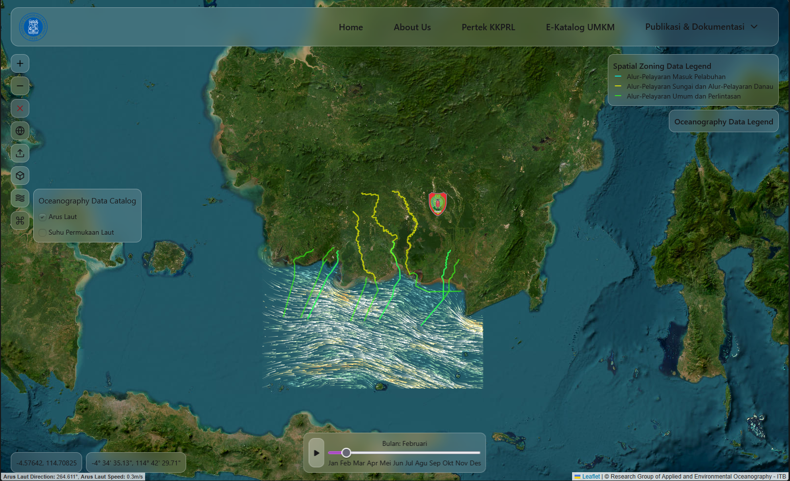

Final-year Oceanography student at ITB specializing in the intersection of Marine Science and Geoinformatics. I build data-driven WebGIS solutions using Python, Django, and PostGIS to solve real-world spatial challenges. Experienced in hydrographic surveying and dedicated to developing innovative digital mapping tools
Python (Advanced: NumPy, Pandas, Xarray, Geopandas), MATLAB, and Fortran.
Specialized in Numerical Methods, Hydrodynamics, and SWAN Ocean Modelling.
Django, Tailwind CSS, JavaScript (Leaflet.js, Alpine.js), HTMX, and PostGIS.
Experienced in ArcGIS, Linux Environments, and spatial data visualization.
Experienced as Teaching Assistant for Fluid Mechanics, Ocean Tides, Numerical Methods, and Computational Thinking.

A spatiotemporal visualization tool built with Django and Leaflet.js to analyze geospatial and oceanographic data.